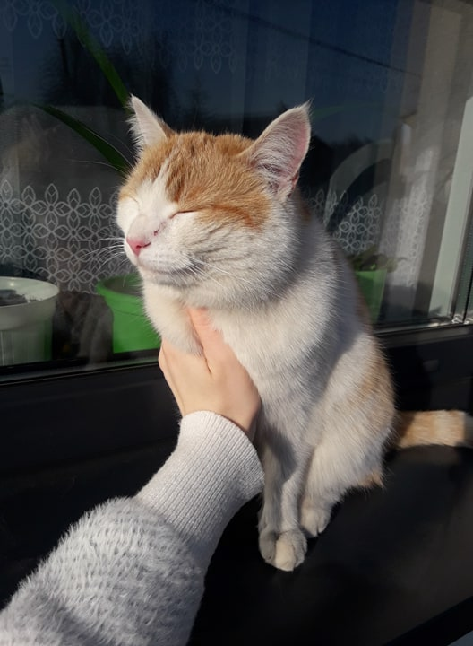

Jak narazie jest tu chaos i będzie pewnie większy :). Nie miałem zupełnie pomysłu jak zrobić własną stronę domową, koncepcja dziennika z nauki do mnie nie dociera. Potem wymyśliłem, że niech to będzie własne narzędzie ze skondensowaną wiedzą i tipami na jakie się natknę w ramach rozwoju. Tak żeby później nie musieć się przekopywać przez internet i szereg własnych plików, szukając rzeczy, które już kiedyś znalazłem i ogarnąłem. Plus, będę wrzucać przerobione pomysły i przykłady jak zrobić różne rzeczy, zaczynając od absolutnych podstaw. Projekt będę rozijał w ramach ogarniania tematu, docelowo, będę tu wrzucał też linki do stron, które zrobiłem, więc może wyjdzie z tego jakieś fajne portfolio. :)
patronką stronki została ta tłusta kotobułka
